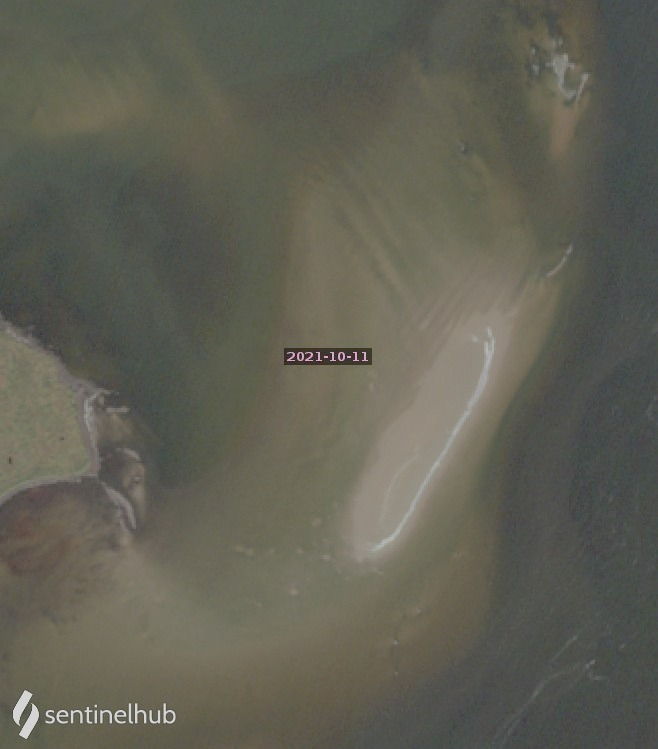

VOL. IV · PLATE Z · 07 / 07
OBLIVION AND RECLAMATION
Closed cemeteries, sinking mounds, erased inscriptions, and the quiet return to soil
The material end of the cemetery: sanitary closures, the collapse of wooden crosses, the chemical weathering of limestone names, and the return of memorial ground to forest and turf.
18th to 21st century · Rural churchyards and decommissioned municipal cemeteries · Material ecology of Russian burials

Elegy
When thoughtfully I stroll beyond the city (The Village Churchyard)
Когда за городом, задумчив, я брожу (деревенское кладбище)
Original
English translation
Excerpt Lines 19–38 (the second half, describing the village cemetery).
Pushkin wrote this poem in August 1836, six months before his fatal duel, having just buried his mother at the Svyatogorsky Monastery. The poem contrasts the corrupt Petersburg necropolis (vanity, rotting vaults, greedy thieves) with the tranquil decay of the rural churchyard.
In Plate Z, this serves as the primary literary voice of cemetery ecology: when human memorial attention ceases, the grave cross rots into earth, the mound settles, and oaks and wild grass reclaim the soil into peaceful, natural oblivion.
- родовое кладбище
- Ancestral rural churchyard where generations of kin rest together.
- бесплодные плиты
- Barren urban stone slabs, contrasted with living green turf.
- русский крест
- The traditional simple wooden eight-ended grave cross.
Source A. S. Pushkin, «Kogda za gorodom, zadumchiv, ia brozhu…» (1836), lines 19–38. · open source
Rights Public domain. Pushkin died in 1837; poem written 1836. Public domain worldwide.

Apparatus sources · related plates · terms
Sources for this plate
- pushkin1836-pogost Aleksandr Sergeyevich Pushkin — «Kogda za gorodom, zadumchiv, ia brozhu…» (Part II: The Village Churchyard) (1836)
- kremleva1999 Kremleva, Irina A. — Pokhoronno-pominalnye obychai i obriady [Funeral and Memorial Customs and Rites] (1999)
- sanitary-rules-cemetery Chief State Sanitary Doctor of the Russian Federation — SanPiN 2.1.2882-11: Gigienicheskie trebovaniia k razmeshcheniiu, ustroistvu i soderzhaniiu kladbishch (2011)
- permilovskaya2013 Permilovskaya, Anna B. — Kul'turnye smysly narodnoi arkhitektury Russkogo Severa [Cultural Meanings of Folk Architecture of the Russian North] (2013)
- merridale2000 Merridale, Catherine — Night of Stone: Death and Memory in Russia (2000)
URLs, access dates and limitations are in the bibliography.